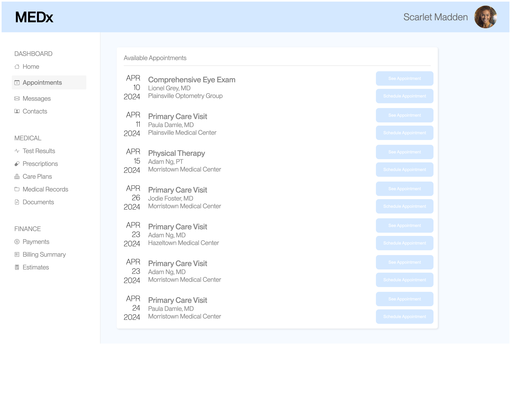
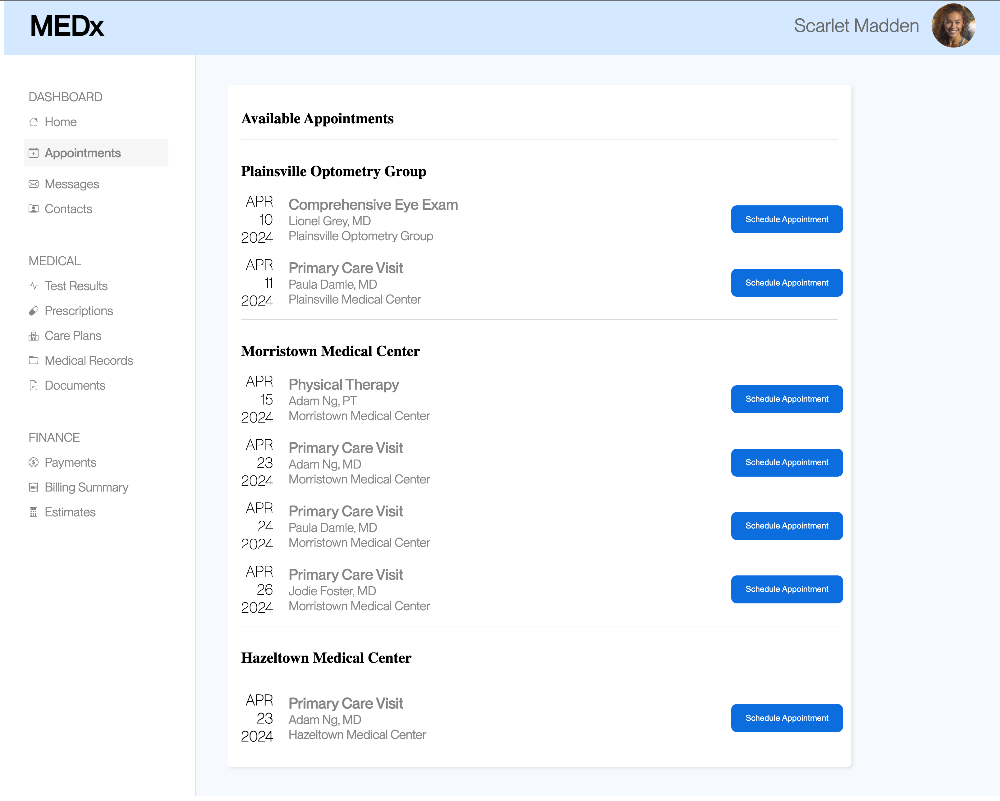
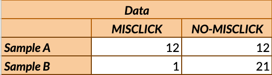
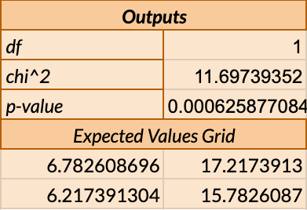
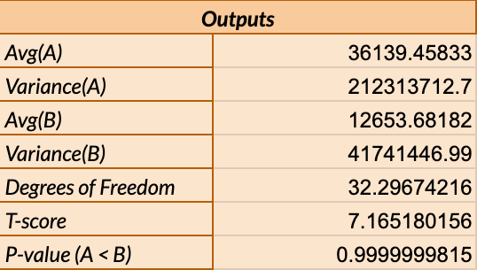
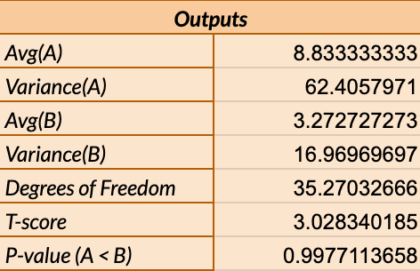

A/B Testing
Introduction
In this project I was tasked to run an A/B test on two different webpages where
users will schedule an appoint with a doctor. Version A is the original webpage
while version B is the one I created. In order to determine if the design choices I
implemented made an impact to user interaction, I created statistical tests
for different metrics that were based on user data.
Webpage Version A

Webpage Version B

Collection of Data
To collect user data, we had everyone in a classroom try to complete the same task.
This was done by setting all of the computers side-to-side so that every student could visit everyone
else's computer quickly. Because of this method of gathering data, the values we observed may not entirely
be accurate since the students would have been used to seeing many similar designs making them
complete the task more efficiently.
Metrics
Misclick Rate: The frequency with which users click
something else on the page before finding the correct button for the task.
Time on Page: Time spent on the webpage for each user
before clicking the right button.
Number of Clicks: The total number of clicks made by the
user before clicking the correct button for the task.
Misclick Rate
Null Hypothesis: The misclick rate for users on version A of
the webpage is equal to the misclick rate for users on version B of the webpage.
Alternative Hypothesis: The misclick rate for users on
version A of the webpage is higher than the misclick rate for
users on version B of the webpage.
I chose this alternative hypothesis because one change that I made to version B was
to remove the “see appointment” button since the appointment details are already
visible. Another change that I made was to sort the appointments by date
with dividers for each location. Because of these changes, I believe that
I could reject the null hypothesis since version A makes it difficult to see what button
corresponds to what appointment and the appointments are
unorganized which will make the misclick rate higher.
In order to test the hypothesis, I used a chi^2 test because I'm trying to see if
the misclick frequency is different from the no-misclick frequency. When calculating
the p-value I get 0.0006258 which since it is less than 0.05, it indicates that there
is a significant statistical difference between the two versions.


chi^2: I calculated the chi^2 value to get 11.697 which is the standardized
difference of misclick categories between the two sample distributions A and B. This
value shows that there is a large magnitude of difference between the misclick rate for
version A and version B.
Degrees of freedom: The value here is 1 which is a result of the amount of categories
that are present subtracted by one. This value is important because it is used to calculate the p-value.
It is likely that version B is better than version A. This is because for version A,
the number of users who had a misclick and did not misclick were the same whereas only one user
out of twenty-two in version B misclicked. I believe that this difference is a result of having
better organization on the page and less options to click which resulted in more precision
by the user.
Time on page
Null Hypothesis: The time spent on the webpage
is the same for users who visit version A of the webpage as
for users who visit version B of the webpage.
Alternative Hypothesis: The time spent on the
webpage is longer for users who visit version A of the webpage
than for users who visit version B of the webpage.
I selected this alternative hypothesis because version A is
unsorted, while in version B, I have organized the appointments
not only by date but also grouped them by location. Consequently,
I believe that I could reject the null hypothesis as users will
be able to locate the correct appointment more quickly using version B's organization.
I chose to use the one-tailed t-test because I'm trying to find out
how much longer/shorter it took a user to complete the task when using
either version A or B. Since my null hypothesis was saying that version
A would have a longer time than version B, the pValue would be calculated
by doing (1 - pValue) which gave me a value of 0.0000000185. This value
indicates that the difference of the two versions of the page are statistically significant as
it is less than 0.05.

T-score: With a large value of approximately 7.16, this indicates that there is a
large standardized difference for the time on the page between the two versions
that is more than 7 standard errors away from zero, suggesting that this may be
a statistically significant result.
Degrees of freedom: This is based on the number of participants and is
used to show how many users are needed in order to get the values observed. This
was caluclated to be a high value of around 32.29 which means that there is more
participants in the group which is good.
It is likely that version B is better than version A. This is because on avereage, a user will spend around
36.13 seconds on version A and around 12.65 seconds for version B. I believe that this difference is a result of having
better organization on the page which allows a user to quickly find what their looking for.
Number of Clicks
Null Hypothesis: The number of clicks is the same for
users who interact with version A of the webpage as for users who
interact with version B of the webpage.
Alternative Hypothesis: The number of clicks is higher
for users who interacted with version A of the webpage than those who
interacted with version B of the webpage.
I chose this alternative hypothesis because I removed the “See Appointment”
button for version B since the details are already visible. I also improved
the color contrast for the text and buttons. Conversely, version A has
two buttons for each appointment that are situated right next to each other
and lack sufficient color contrast for the text and the buttons. Because of
this, I believe that I could reject the null hypothesis. This will likely be a result
of having only one button with good color contrast instead of two with poor contrast which will enable users to be more precise when
attempting to click the correct button.
I chose to use the one-tailed t-test because I'm trying to find out how many
more/less times a user clicks on the screen before clicking the correct button.
Since my alternative hypothesis was saying that version A would have more clicks
than version B, the pValue would be calculated by doing (1 - pValue) which gave me
a value of 0.00228. Since it is less than 0.05, there is a statistical significance
between version A and B.

T-score: With a large value of 4.06, this indicates that there is a
large standardized difference for the number of clicks between the two versions
that is more than 4 standard errors away from zero, suggesting that this may be
a statistically significant result.
Degrees of freedom: This is based on the number of participants and is
used to show how many users are needed in order to get the values observed. This
was caluclated to be a high value of around 35.27 which means that there is more
participants in the group which is good.
It is likely that version B is better than version A. This is because for version A,
the average number of clicks was around 8.83 whereas version B saw an average of around 3.27.
I believe that this difference is a result of increasing the color contrast so that user did not mistakenly click a
wrong button.
Results
After conducting a test on each metric, the results show that the design choices implemented in version B
strongly suggest a more efficient UI experience rather than those of version A. This is because for every test,
version B had more favorable values such as how it had a lower misclick rate, lower number of clicks to finish the task, and lower time
spent on the page.
Key Takeaways
How data is gathered is important: This was an important lesson because in our circumstance,
users were very familiar with version A as they also worked on the same webpage making them
more likely to know what changes to expect (especially after looking at other student's changes).
As a result, this could skew the statistical data making observations of the design choices not be reflective
of their true effects.
Sometimes less is more: While there is good intentions behind giving a user as much information or options
as possible, it can sometimes overwhelm a user making them have a poor experience. As my data showed, simplifying the
experience increased efficiency for when a user wanted to schedule an appointment.